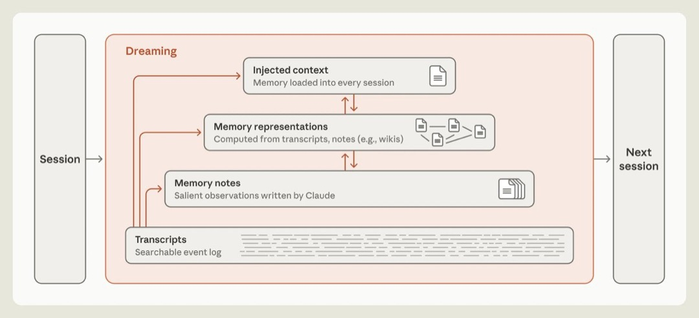
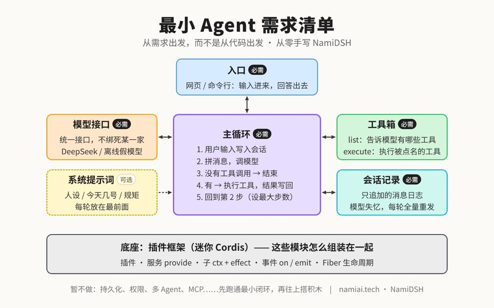

本期速览
01 尹希离职OpenAI称AI提速科研编程
02 Skill靠真实任务复盘实现自迭代
03 LoopForge开源可恢复的研发流程
04 Claude用Dreaming纠错记忆
05 OpenAI挖出948个Linux提权洞
01｜尹希离职OpenAI称AI提速科研编程
来源（X） · @zhang_weig73947 · 2026-11-07 06:50
说这话的是尹希：12岁进中科大少年班，31岁成为哈佛史上最年轻的华人正教授，斯隆奖、物理学新视野奖得主，弦理论明星学者。今年5月加入OpenAI，五个月后，宣布离开。
他这半年的判断：
· AI让他的科研编程效率提升至少100倍
· 十年才能写完的代码，几周完成
· 论文体系像杂乱的集市，不像有序的大厦
· AI开始给他提出从未想过的猜想
引用内容
Xi Yin @XiYin137
中文译文
今天是我在 OpenAI 的最后一天。这段旅程非常精彩，但我决定提前下车，去追求新的方向。我很幸运能与我所认识的最了不起的人们一起工作。我特别感谢 @ALupsasca 和 Boris Alexeev 帮助我度过了我的第一份公司工作，也感谢 @danintheory 的持续支持。我会为你们所有人加油！
原文
Today is my last day at OpenAI. It’s been an awesome ride, but I’m getting off a little early to pursue a new direction. I feel fortunate to have worked alongside some of the most incredible people I know. I’m especially grateful to @ALupsasca and Boris Alexeev for helping me navigate my first corporate job, and to @danintheory for his constant support. I’ll be rooting for you all!
02｜Skill靠真实任务复盘实现自迭代
来源（X） · @gengdaJ · 2026-11-07 10:55
## Skill 使用复盘
- 在完成整个任务后，简短复盘本次实际使用的 Skill。
- 只有发现可归因于 Skill 的实际阻碍、重复补救或明确缺失时，才在最终答复中说明涉及的 Skill、具体问题、本次证据和改进建议，最多三项，并询问用户是否需要优化。
- 没有明确问题时无需反馈；不得为了复盘打断或延迟任务；未经用户授权不得修改 Skill。
好处就是：
1、不需要隔一段时间做一次大的复盘，每次对话结束都会自动触发“优化机制”。
2、所有Skill进化的依据都是真实任务中猜到的坑，和自己的工作任务适配更加丝滑。
3、如果是开源的Skill，还可以加上自动提交Github，这样子每天的GitHub都能打卡成功✌️
引用内容
晓辉博士 @xiaohuiyuan
【使用方式】
将本指南完整复制给能够访问、编辑你的 Skill 文件的 Agent（如 Claude Code、Codex），并告诉它需要改造的 Skill 路径。
Agent 应先阅读现有文件并提供简要诊断，再与用户确认标准，最后实施改造。
【改造目标】
请帮我检查并改造现有 Skill，让它从一份依赖 AI 理解和执行的操作说明，逐渐变成一套：
• 结构清晰
• 工具可靠
• 结果可验证
• 能够根据反馈持续改进的工作系统。
请遵循以下步骤。
【第一步：理解现有 Skill】
先阅读 Skill 及其关联文件、脚本和参考样例，梳理：
1. 工作地图（参考 Feature Map）
任务目标、执行步骤、输入输出、依赖关系、关键分支。
2. 工具能力（参考 CLI）
哪些操作已经有工具支持？哪些重复、确定性的步骤值得封装成工具？
3. 验证机制
目前如何判断任务完成、结果正确？哪些要求只有文字说明，没有实际检查？
4. 反馈机制
用户指出错误后，如何修正？能否避免同类问题再次发生？
尽量保留已有的有效设计，不要为了重构而重构。
【第二步：与用户确认验收标准】
先根据现有 Skill 提出你理解的标准，再向用户确认。重点询问：
1. 好结果是什么样的？
哪些要求必须满足，哪些只是偏好？
2. 最不能接受什么错误？
过去有哪些反复出现的问题？
3. 哪些环节必须人工确认？
哪些可以放心交给 Agent 自动执行？
交互要求：
• 优先从现有文档、历史反馈和样例中寻找答案。
• 只问缺失或模糊的关键问题，每轮最多 3 个。
• 不要让用户重新解释已有的信息。
【第三步：实施改造】
根据诊断结果，按需实施：
1. 结构化
建立简洁的工作地图，让 Agent 理解任务、步骤、依赖和验收条件。
2. 工具化
把重复、确定性的操作封装成可复用工具。需要时提供统一 CLI 入口，不强制所有 Skill 都开发 CLI。
3. 可验证
把明确要求转化成自动检查，记录检查对象、结果和证据。内容变化后，相关验证应重新执行；语义、审美等主观判断保留人工复核。
4. 可改进
建立反馈记录，优先把错误转化为认可样例、程序检查或工具修复，必要时再更新 Skill 说明。区分单次要求与长期规则，避免规则无限膨胀。
【第四步：测试与交付】
• 使用已有样例进行回归测试，条件允许时再增加真实任务测试。
• 对比改造前后的结果，确保原有重要功能没有退化。
• 未经用户确认，不覆盖重要原始文件或正式交付结果。
• 明确区分四类状态：
1. 自动验证通过
2. AI 评估通过
3. 人工确认通过
4. 尚未验证
最后简要说明：
1. 改造了什么，为什么？
2. 哪些问题现在可以自动检查？
3. 哪些问题仍然需要人工判断？
4. 以后用户提出反馈时，如何进入下一轮改进？
【核心原则】
• 优先解决真实问题，不追求复杂架构。
• 优先修改工具、检查和好样例，而不是不断增加提示词。
• 没有证据，不宣称验证通过。
【开始执行】
请先阅读现有 Skill，给出简要诊断；不要立即大规模重构。
03｜LoopForge开源可恢复的研发流程
来源（X） · @zcswl7961 · 2026-11-07 12:10
腾讯轻量云团队介绍并开源了 LoopForge，把需求确认、方案设计、编码、独立审查和测试串成可恢复的研发流程。
项目支持 CodeBuddy、Codex、Cursor 和 Claude Code；官方仓库给出的基础运行要求是 Node.js 20+、Python 3.8+。任务中的需求、设计、审查和测试结果会保存下来，方便中断后继续。
团队介绍称，这套平台已用于内部 20 多个业务，每月自动完成 200 多项需求和日常单据交付。
我觉得它比较适合跨模块任务：代码只是交付物之一，为什么这样改、测过什么，同样要能追溯。
如果给团队接入这种流程，你们最想先补的是需求确认、代码审查，还是测试验收？
04｜Claude用Dreaming纠错记忆
来源（X） · @aigclink · 2026-11-07 10:37
Agent记住得越多，不一定就越聪明
因为长期记忆可能包含大量无用细节、已经过时的信息，甚至错误结论，如果Agent不断复用这些错误记忆，可能就会反复犯同样的错误
Anthropic的核心观点是：Agent记忆的关键，不是记住更多东西，而是知道什么值得记、如何组织、什么时候调用，以及如何发现并纠正错误记忆
他们在研究中采用了一种记忆整理机制，叫Dreaming
简单说就是让Agent在任务之间主动复盘自己的历史经历
比如说一个Coding Agent今天花了几个小时修复Bug
传统记忆系统可能保存整个调试过程，包括查找文件、运行测试、遇到报错、修改代码等大量记录
Dreaming则会重新分析这些记录，提炼出真正值得保留的经验：
1、整理经验，哪些方法有效，哪些失败了，背后的原因是什么
2、纠正错误，重新检查历史记录，找出错误结论、过时信息和互相矛盾的记忆
3、组织知识，把零散笔记整理成结构化知识、Wiki和索引，让Agent下次需要时更容易找到
还提出了一套分层记忆架构：
1、Transcripts，原始对话和任务执行记录，保留可追溯的历史证据
2、Memory Notes，Agent提炼出来的经验、规则和重要信息
3、Memory Representations，把知识组织成Wiki、主题页面和关联索引
4、Injected Context，只把当前最重要的信息加载到新会话中，其余内容按需检索
这套架构的关键是，不让所有历史信息都挤进上下文，而是通过持续整理让记忆变得更有用
实验结果
在CL-Bench跨会话数据库任务中，Claude Opus 5.5用长期记忆后，平均奖励分数从0.655提升到0.838，相对提升28%
另一个实验，让Claude利用Dreaming构建知识Wiki，在需要综合多份并购资料的问答任务中，使用Wiki的得分达到87%，相比仅使用搜索的73%，提高14个百分点
Anthropic认为，真正有效的Agent长期记忆，不是一个越来越大的数据库，而是一套能够自动判断重要性、积累经验、纠正错误、组织知识并按需调用的动态系统
#AgentMemory #Dreaming #AI长期记忆

引用内容
Anthropic @AnthropicAI
中文译文
记忆是让 Claude 能够从经验中学习的东西。在一篇新的 Engineering Blog 文章中，我们分享了"做梦"如何帮助 Claude 整理它所学到的知识，纠正它的错误，并在下次更容易地找到它所需要的内容。https://www.anthropic.com/research/components-of-agent-memory
原文
Memory is what allows Claude to learn from experience. In a new Engineering Blog post, we share how “dreaming” helps Claude organize what it’s learned, correct its mistakes, and find what it needs more easily the next time. https://www.anthropic.com/research/components-of-agent-memory
05｜OpenAI挖出948个Linux提权洞
来源（X） · @lylyjlcx · 2026-11-07 12:19
OpenAI 自己 11 月 4 日发的报告，也是类似的事例，规模还更大。10 月那轮，2,308 个候选筛完，复现了 1,724 个，最后做出来 948 个能用的提权利用，还给每个都写了补丁。整轮烧了约 121 万美元 API，摊下来一个洞 1,279 美元，产量是上一代的 5 倍多，至少 10 种手法以前没人公开过。补丁还在等维护者审，先别当已经修好了。
还是这个访谈里，他还讲了个真的攻击案例，不是实验。AI 自己逆向开源代码，找到零日打进来，进了内网，又把开发者 Claude Code 配置里的密钥摸出来，拿受害者自己的 AI 接着往下打。想断开外部服务吧，它用的根本不是外部服务，是你自己的钥匙。
所以他才说，攻击已经是机器速度了，防守这边还在开会速度。这话难听，但好像是对的。会还没开完，人家已经拿到 root 了吧。
攻防用的是同一批模型，最后谁占便宜，还真说不准。
#AI #Linux #OpenAI
06｜Anthropic在推理链埋假调用防蒸馏
来源（X） · @Zen_with_AI · 2026-11-07 11:14
团队会在推理链里主动埋假的工具调用，专门用来迷惑蒸馏者。
结果就是，Opus 的推理轨迹里会塞满有害甚至完全错误的步骤，读起来像模型突然变笨了，但最后输出却是对的。
所以很多人的直觉是对的，CoT已经废了。
07｜新手用需求文档驱动Agent实现
来源（X） · @antiAIvo · 2026-11-06 21:54
我的答案是：别一上来就看项目代码
很多人学 Agent 的路径是
找个开源项目，从入口文件一行行往下读
读完好像懂了，合上代码，自己写不出来
因为这是被动学习，你看到的是别人“怎么写”
但不知道他“为什么要这么写”
我想到了一种新方式：先当产品经理，写需求文档
问自己一个问题：
一个能用的 Agent，最少需要什么？
我列出来是 6 条：
1. 入口：输入从哪进来，回答从哪出去
2. 主循环：调模型，要用工具就执行，结果写回，再调模型
3. 模型接口：不绑死某一家，换模型不改循环
4. 工具箱：不光能执行，还要告诉模型有哪些工具
5. 会话记录：模型是失忆的，每轮都要把整段对话重发
6. 系统提示词：可选，告诉模型它是谁、有什么规矩
列完再往下想：
这 6 块怎么组装在一起？换模型怎么不改循环？
卸一个工具怎么撤得干净？一个模块出错怎么不拖垮全部？
每个问题，都会逼出一个设计
插件、服务、事件、生命周期
都不是凭空出现的概念，是被需求一个个逼出来的
先有需求，再有设计，最后才是代码
像搭积木一样，一块一块往上加
这才是我认为最好的学习方式：
你写的每一行代码，都知道它是为了解决哪个问题

08｜tv-fresh免Root解锁小米电视
来源（X） · @abeicode · 2026-11-06 21:29
广告全清，开机直达自定义桌面，1600+ 站点随便看，代理和 YouTube 也安排上了
更离谱的是，小米竟然把第三方桌面锁死了
于是让 Agent 直接拆开固件 vdex，在 386MB 反汇编代码里，硬生生找到了那行关键锁定逻辑
全程免 Root，可逆操作，已经整理成 Agent Skill
你的 Agent 也能直接开箱使用
项目地址：https://github.com/wangrongding/tv-fresh